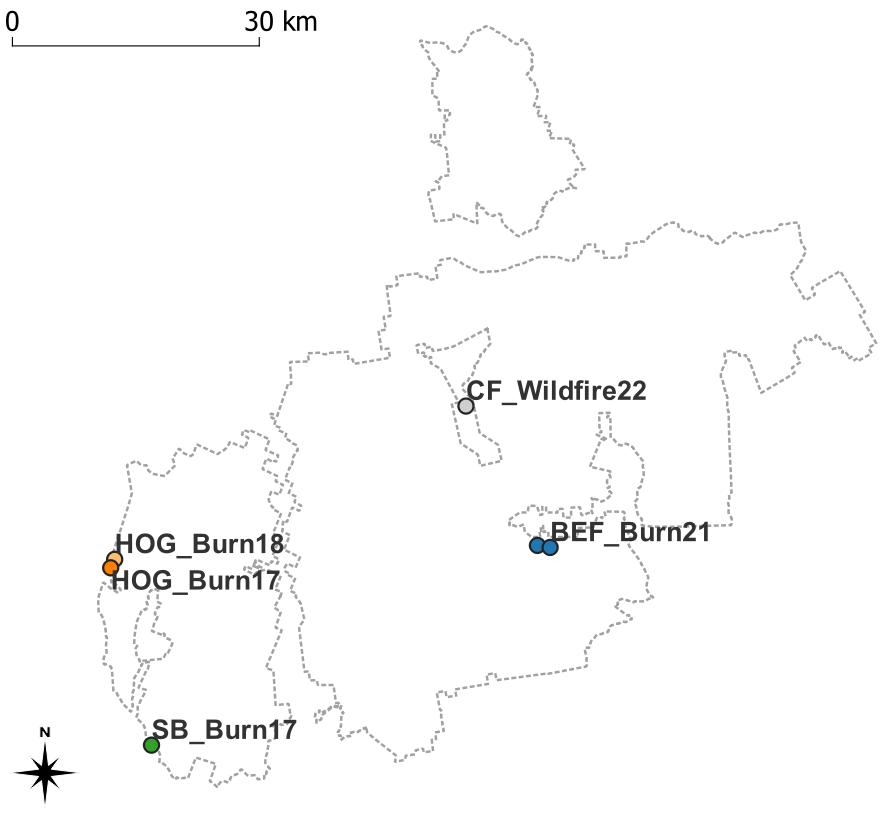

Oak at the Edge
Introduction
Quercus rubra regeneration landscape at present
Quercus rubra L. (hereafter Q. rubra) is an economically and ecologically important tree species in the northeastern United States. It is a fast-growing species and thrives on a wide range of upland soils (Abrams 1992). Additionally, it is tolerant of heat, drought, and even ground fire (Abrams 2000). Q. rubra produces high-quality timber with high wood density, making it an important lumber commodity and prompting forest managers to be concerned with its sustainable regeneration (Dey and Schweitzer 2018). Q. rubra is managed for other ecological purposes as well. For example, it serves as a habitat and food source for many wildlife species, from birds like turkeys and jays to mammals like mice, squirrels, and deer, and even insects like weevils (Mcshea et al. 2007). Q. rubra drives their population dynamics with its high mast production occurring about every two years.
Q. rubra currently faces many regeneration challenges in the northeastern United States, and its recruitment will continue failing without timely and appropriate interventions. One such challenge is acorns becoming a major hard mast source for wildlife consumption since the demise of American chestnut and the spread of beech bark disease. This high seed predation deters successful advance regeneration outside of mast years (Mcshea et al. 2007). Moreover, if seeds are buried under a thick litter layer, the seed radicle may struggle to reach the mineral soil, and this can negatively affect epicotyl emergence (Arthur et al. 2012). Even when seedlings are established, they risk getting eaten, especially by deer (Mcshea et al. 2007). Q. rubra is also susceptible to some fungal pathogens including Phytophthora and Armillaria, which cause sudden oak death and Armillaria root rot respectively. Lastly, its shade intolerance retards its seedling recruitment when there is insufficient light in the understory (Nowacki and Abrams 2008). Seedling growth might be slow due to competition from more shade-tolerant species such as Acer rubrum and Fagus grandifolia.
Fire-oak hypothesis
Abrams (1992) hypothesized that prescribed fire might be crucial for oak regeneration. Fire has been integral to upland oak systems in the eastern United States for millennia. Pre-settlement fires occurred as a function of lightning strikes as well as native activities such as cooking, heating, seedbed preparation, hunting, ceramic manufacture, and communication. Burning continued with European settlement and pitched oak as the dominant species in periodically burned areas (Abrams 1992). Over time, Q. rubra became much more adapted to a periodic fire regime than other hardwoods and, as a result, can take advantage of the postfire environment. However, fire suppression became mainstream policy in the 1920s and promoted forest mesophication (Nowacki and Abrams 2008). As the eastern landscape becomes wetter and more shady, mesic microenvironmental conditions improve and favor the regeneration of shade-tolerant species. This positive feedback loop shrinks suitable habitats for shade-intolerant, fire-adapted species like Q. rubra over time. Therefore, it has been argued that it is necessary to bring back fire in a controlled manner to reverse the feedback loop and restore the upland oak ecosystems (Abrams 1992).
Adaptive silviculture
The other important consideration for oak regeneration is that Q. rubra is projected to move further northward due to climate change (Peters et al. 2020). In New England, its distribution is projected to increase substantially by 2100 under both RCP 4.5 and 8.5 scenarios due to high adaptability. Nevertheless, adaptive silviculture can be implemented to ensure a seamless transition for the species north of its current range limit and contribute towards long-term resilience on the stand level (Nagel et al. 2017). Methods range from different ways of thinning and artificial planting to prescribed burns and combinations of them. Many previous studies have demonstrated that fire, alone or when combined with thinning, strengthens or re-establishes its dominance in different ecosystems by playing to its fire resistance and easing other regeneration limitations (e.g., Iverson et al. (2008), Granger et al. (2018), Bassett et al. (2020), Dee et al. (2022)). My study will build on this research and further explore its role in oak range expansion.
Research questions and hypotheses
Six pairs of burn and control forest stands from four locations across the White Mountains ecoregion are picked for my study. They are part of a novel landscape-scale project implemented by the USFS over the past decade. There is a gradient of burn intensities and silvicultural treatments represented among these locations, along with variable burn intensity at smaller spatial scales within each stand. Assessment of how these factors have affected oak regeneration success will help to inform management considerations. The applied silvicultural prescriptions were all targeted towards oak regeneration, and my study investigates their results to answer the research questions below:
Q1: Does prescribed fire promote the recruitment of red oak seedlings relative to other forest management practices, and if so, what mechanisms are at play?
H1: Oak possesses fire-tolerant traits that give them an edge over more mesophytic species such as thick bark and deep roots (Abrams 1992). Mother oak trees hence have greater survival rates, giving them more time and better chances at reproducing while their competitors experience dieback (Dey and Schweitzer 2018). Prescribed fire burns can promote oak regeneration at any and all critical life stages including pollination, flowering, seed set, and germination (Arthur et al. 2012).
Q2: Does prescribed fire improve the growth of red oak seedlings relative to other forest management practices, and if so, what key mechanisms are involvedat play?
H2: Fire temporarily increases available nitrogen pools (Wan et al. 2001) and fluxes (Wang et al. 2014) and seedlings can take advantage of them to grow faster. Additionally, fire reduces pathogen loads that can negatively affect seedling growth (Filip and YangErve 1997). Once reaching an appropriate height and an appropriate density, oak seedlings can be more competitive against their mesophytic counterparts (Iverson et al. 2008).
Methods
Study sites
The selected pairs of burn and control forest stands for this study are paired by project and treatment date, with one stand harvested and the paired site harvested and burned (Table A, Figure 1). One pair does not have any notable management history, and its burn stand experienced wildfire instead. There is a gradient of burn intensities and silvicultural treatments represented among these projects, along with variable burn intensity at smaller spatial scales within each unit most probably due to topographical variables.
Table A. Stand pairs in each study site
| Pair | Stand | Burn year | Harvest year | Harvest treatment |
|---|---|---|---|---|
| 1 | Stevens Brooks SB_3/16B |
2017 | 2010 | Shelterwood |
| 1 | SB_5/15C |
- | 2011 | Shelterwood |
| 2 | Hogsback HOG_20/2B |
2017 | 2012 | Seedtree |
| 2 | HOG_3/1C |
- | 2012 | Seedtree |
| 3 | Hogsback HOG_28/2B |
2018 | 2014 | Shelterwood |
| 3 | HOG_12/2C |
- | 2013 | Shelterwood |
| 4 | Crawford Notch State Park CF_B |
2022 | - | - |
| 4 | CF_C |
- | - | - |
| 5 | Bartlett Experimental Forest BEF_44B |
2021 | 2019 | Clearcut |
| 5 | BEF_45C |
- | 2019 | Clearcut |
| 6 | Bartlett Experimental Forest BEF_46B |
2021 | 2019 | Clearcut |
| 6 | BEF_46C |
- | 2019 | Clearcut |

Field data collection
Site charactization
In summer 2023, a number of transects (anywhere between 50 and 225 m long) were laid 30 to 50 m apart in each study stand; they are either parallel or perpendicular from each other. They are marked by wooden stakes every 25 m. Along a transect is a series of 1 m² quadrats (hereafter referred to as “plots”) spaced 10 m apart from their centers. In total, there were 43 transects laid in 6 pairs of burn-control stands, amounting to 393 plots. Percent slope, aspect, microtopography, burn evidence, and oak litter presence were recorded for each plot. Percent slope was determined with a hypsometer and later validated with topography maps, and aspect with a compass. Microtopography was described qualitatively, using remarks like “slight slope,” “steep slope,” “mid slope,” “concave,” and “convex.” Burn evidence was confirmed with charcoal presence. Percent cover was estimated for bareground, woody debris, leaf litter, rock (which should all amount to 100%), as well as live vegetation at breast height and below. Woody species with diameter at breast height (DBH) smaller than 2 cm were identified and their stems counted.
Oak seedling measurements
If oak seedlings were present, they were tagged, aged, measured for height (cm) and diameter at root collar (DRC, mm), and checked for evidence of herbivory and pathogen damage. In summer 2024, they were resurveyed twice, once at the beginning and again at the end, to capture growth between the two growth seasons and within this season alone. More variables were added to this survey, including number of leaves and number of live and dead branches. Herbivory and pathogen damage were quantified percentage-wise as well as described qualitatively.
In the 5 m radius of each plot, trees were identified and measured for DBH, providing they were 2cm or larger. The number of oak seedlings was also counted. In summer 2024, oak seedling abundance was re-estimated twice, once at the beginning and again at the end of the season.
LAI measurements
During the peak of the 2024 growth season, leaf area index (LAI) measurements were carried out at the center of each plot to quantify the amount of leaf material in its canopy. The LI-COR LAI-2200C Plant Canopy Analyzer was propped at knee height to simulate the light availability to seedlings and faced away from the sunlight direction. LAI data will be matched, calibrated, and analyzed using the LI-COR FV2200 software.
Data visualization and analysis
Understory competition and overstory composition will be visualized by bar graphs to illustrate the stand structures of each sites. Together with the annual 5-m radius oak seedling counts, these plot-level stem counts and estimated basal areas will be scaled up to the stand level of per hectare. Box plot graphs of seedling counts and various abovementioned growth measurements as well as LAI measurements will also be constructed. Suitable statistical analyses, most likely ANOVA with blocking, will be carried out for each response variable to test if prescribed fire has an effect on them, and if so, whether it is significant. The entirety of data visualization and analysis will take place in RStudio using multiple packages cited below.
Citations
R packages
[1] F. Aust. citr: RStudio Add-in to Insert Markdown Citations. R package version 0.3.2. 2019. https://github.com/crsh/citr.
[2] C. Boettiger. knitcitations: Citations for Knitr Markdown Files. R package version 1.0.12. 2021. https://github.com/cboettig/knitcitations.
[3] W. Chang, J. Cheng, J. Allaire, et al. shiny: Web Application Framework for R. R package version 1.9.1. 2024. https://CRAN.R-project.org/package=shiny.
[4] G. Grolemund and H. Wickham. “Dates and Times Made Easy with lubridate”. In: Journal of Statistical Software 40.3 (2011), pp. 1-25. https://www.jstatsoft.org/v40/i03/.
[5] K. Müller and H. Wickham. tibble: Simple Data Frames. R package version 3.2.1. 2023. https://CRAN.R-project.org/package=tibble.
[6] R Core Team. R: A Language and Environment for Statistical Computing. R Foundation for Statistical Computing. Vienna, Austria, 2022. https://www.R-project.org/.
[7] V. Spinu, G. Grolemund, and H. Wickham. lubridate: Make Dealing with Dates a Little Easier. R package version 1.9.3. 2023. https://CRAN.R-project.org/package=lubridate.
[8] H. Wickham. forcats: Tools for Working with Categorical Variables (Factors). R package version 1.0.0. 2023. https://CRAN.R-project.org/package=forcats.
[9] H. Wickham. ggplot2: Elegant Graphics for Data Analysis. Springer-Verlag New York, 2016. ISBN: 978-3-319-24277-4. https://ggplot2.tidyverse.org.
[10] H. Wickham. stringr: Simple, Consistent Wrappers for Common String Operations. R package version 1.5.1. 2023. https://CRAN.R-project.org/package=stringr.
[11] H. Wickham. tidyverse: Easily Install and Load the Tidyverse. R package version 2.0.0. 2023. https://CRAN.R-project.org/package=tidyverse.
[12] H. Wickham, M. Averick, J. Bryan, et al. “Welcome to the tidyverse”. In: Journal of Open Source Software 4.43 (2019), p. 1686. DOI: 10.21105/joss.01686.
[13] H. Wickham, W. Chang, L. Henry, et al. ggplot2: Create Elegant Data Visualisations Using the Grammar of Graphics. R package version 3.5.1. 2024. https://CRAN.R-project.org/package=ggplot2.
[14] H. Wickham, R. François, L. Henry, et al. dplyr: A Grammar of Data Manipulation. R package version 1.1.4. 2023. https://CRAN.R-project.org/package=dplyr.
[15] H. Wickham and L. Henry. purrr: Functional Programming Tools. R package version 1.0.2. 2023. https://CRAN.R-project.org/package=purrr.
[16] H. Wickham, J. Hester, and J. Bryan. readr: Read Rectangular Text Data. R package version 2.1.5. 2024. https://CRAN.R-project.org/package=readr.
[17] H. Wickham, D. Vaughan, and M. Girlich. tidyr: Tidy Messy Data. R package version 1.3.1. 2024. https://CRAN.R-project.org/package=tidyr.
[18] Y. Xie. Dynamic Documents with R and knitr. 2nd. ISBN 978-1498716963. Boca Raton, Florida: Chapman and Hall/CRC, 2015. https://yihui.org/knitr/.
[19] Y. Xie. “knitr: A Comprehensive Tool for Reproducible Research in R”. In: Implementing Reproducible Computational Research. Ed. by V. Stodden, F. Leisch and R. D. Peng. ISBN 978-1466561595. Chapman and Hall/CRC, 2014.
[20] Y. Xie. knitr: A General-Purpose Package for Dynamic Report Generation in R. R package version 1.42. 2023. https://yihui.org/knitr/.
[21] Y. Xie. “TinyTeX: A lightweight, cross-platform, and easy-to-maintain LaTeX distribution based on TeX Live”. In: TUGboat 40.1 (2019), pp. 30-32. https://tug.org/TUGboat/Contents/contents40-1.html.
[22] Y. Xie. tinytex: Helper Functions to Install and Maintain TeX Live, and Compile LaTeX Documents. R package version 0.53. 2024. https://github.com/rstudio/tinytex.